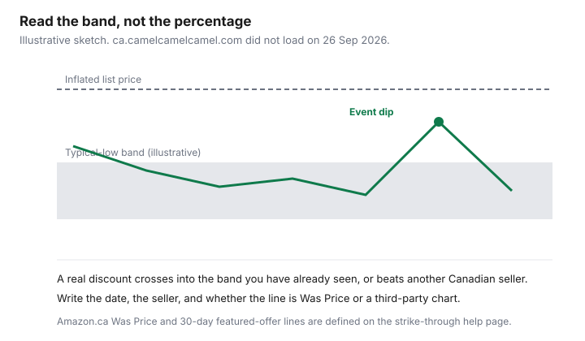

Household Items and Supplies · Canada
How to Track Amazon.ca Prices on Household Items Before You Buy
An Amazon.ca price moves because the cart does not lock it. The shopping-cart help, node GF3GA88LAZ36ZMSQ, text retrieved 26 September 2026, says items in the cart always reflect the most recent price on the product page, and that placing an item in the cart does not reserve that price. You are not charged until the order enters the shipping process. If the correct price of an item sold and shipped by Amazon.ca is higher than the stated price, Amazon says it will contact you before shipping or cancel the order. Sellers may follow different policies on a mis-priced item.
Household shoppers lose money when they treat today's tile as the normal price. The method is a written row: model, price, list or was price, seller, and the date. The October event is the Prime Big Deal Days guide. After you have paid, adjustment rules at other retailers are the price-adjustment guide.
Disclosure: Amazon.ca storefronts are an offer type. Saving Optimizer may earn a commission if we later add a partner link. We do not currently claim an Amazon partnership. Education only.
Key takeaways
- Amazon.ca says the cart price is not reserved. It can change before the order ships.
- List Price, Was Price, and Lowest Price in 30 Days are defined on the strike-through help page opened 26 Sep 2026.
- ca.camelcamelcamel.com showed a security check that day, so this guide does not rank trackers or describe buttons it could not see.
- Sold by Amazon.ca and a third-party seller are different return paths. Most items: 30 days from delivery if original or unused.
- This draft did not open a page that promises Amazon.ca will refund a later price drop. The return window is a return, not an adjustment.
Why Amazon.ca prices change so often
The cart page gives the mechanism you can verify without a theory of algorithms. The price can rise or fall between the moment you add the item and the moment you buy it. Some discounts are limited-time offers, and the page says the discount Amazon can offer depends on availability, so the price will change on occasion. That is enough to justify a written row. You do not need a story about why a blender moved two dollars overnight.
A crossed-out number is a second price, not a history. The strike-through help, opened 26 September 2026, separates List Price, Was Price, and the one-time featured offer. Subscribe and Save, when a discount is offered, is based on the one-time price from the same seller, and that one-time price can change on later orders. Repeat essentials belong on the Subscribe and Save guide. A one-time vacuum does not.
Setting price alerts on Amazon.ca items
This draft did not open an Amazon.ca help page that offers a price-drop alert. Do not wait for a bell this guide cannot cite. Use a list you already have: Amazon's wish list, a note, or the household sheet. Each row needs the model number, the price on the day you looked, the List Price or Was Price if one is shown, the sold-by name, and the date. Check the row again before you buy, because the cart will not hold the earlier number.
On 26 September 2026, ca.camelcamelcamel.com stopped at a security check. This guide does not describe that tracker's alerts, browser add-on, or how many items it watches. If the site loads for you later, turn on only the feature you can see that day, and write down what it claims to do. No ranking of trackers belongs here, and this page makes no affiliate claim about them. A paid tracker you do not open is another bill.
Reading a price-history chart: typical low, fake 'list price', and event dips
Read Amazon's words before you read a third-party line. List Price is a suggested retail price. Except for books, Amazon.ca displays it only when at least half of Amazon.ca sales in the past 180 days were at or above it, or other retailers offered it at or above it in those 180 days. That test does not mean the List Price is what Canadian Tire charges this week. Was Price comes from Amazon.ca's own price history. The page does not, in the text opened 26 September 2026, publish the median formula. Do not import a 90-day median from a U.S. help page. Lowest Price in 30 Days or Best Price in 30 Days means the current featured offer is no higher than the lowest featured offer on Amazon.ca in the past 30 days.
An event dip is real only if it beats the Was Price or the 30-day line, and a price you have checked at another Canadian seller. A dip that lands above the prices you have already seen is a drawing of a discount, not a discount. The sketch on this page uses made-up dollars so the labels are visible. It is not a reading.

Cross-check with Walmart.ca, Costco.ca, and Canadian Tire before you click
The same model number, in Canadian dollars, in stock, is the comparison. A similar photo is not the same item. Walmart.ca, Costco.ca, and canadiantire.ca are the three checks worth the extra tab for a household appliance or a tool, because their return and price rules are written down and linked from the price-match guide and the adjustment guide. Add delivery and any environmental fee before you call one total cheaper. The fee schedules are a different page; do not ignore a line that shows up only at checkout.
Costco's price is a member price. If you do not have a membership, it is not your comparison. Canadian Tire's pricing policy, read 26 September 2026, says online prices and sale dates can differ by region, and that associate dealers may sell for less. A canadiantire.ca tile is not automatically the price at the store you will drive to. Write the URL and the date next to the Amazon row so you are not matching Tuesday's Amazon price to last month's flyer.
Sold by Amazon vs third-party: returns and warranty differences
The return policy opened 26 September 2026 says most items sold on Amazon.ca can be returned within 30 days of delivery if they are in original or unused condition. Exceptions on that page include shorter windows for some digital goods and Apple-brand products, and a non-returnable list that includes perishables, customised products, and anything marked Final Sale. A refund waits until Amazon or the third-party seller receives the item and decides you are eligible. The page says that can take up to 30 days, and that some returns can incur a shipping fee, a late fee, or a damage fee. Those fee amounts are described as varying, including a late fee of 20 percent of the item price for the first 30 days after the return-by date. Read the line on your return screen. Do not assume every return is free.
If a third-party seller fulfills and ships its own inventory, the return goes to the seller, who must offer a Canadian return address, a prepaid label, or a full refund without a return. The A-to-z Guarantee is for third-party orders, when the last possible date of the order is 90 days or less and a condition on that page is met. It is not a price-match. A manufacturer warranty is not printed in the return policy. If you need the warranty term, it has to be on the listing or in the box, and you should keep the order number with it. The seller name is why two equal prices are not equal.
| Step | Tool | What to record | Decision rule |
|---|---|---|---|
| 1. Capture | Amazon.ca product page and your list | Model, price, List or Was Price, sold-by name, date | If sold-by is blank, do not buy yet |
| 2. History | Amazon.ca strike-through lines. A third-party tracker only if it loads | 30-day featured-offer claim, if shown. Tracker low plus the date you saw it | Ignore a percent that only beats the List Price |
| 3. Other sellers | Walmart.ca, Costco.ca if you are a member, Canadian Tire | Same model, in-stock price, shipping or pickup, date | Buy where the out-the-door total is lower and the return rule is one you can use |
| 4. Seller test | Amazon.ca return policy and A-to-z page | Fulfilled by Amazon.ca or by the seller; Final Sale or not | Filters and batteries: prefer Sold by Amazon.ca. Third-party returns follow the seller rules above |
Household wish-list workflow for the year
Keep one list for the year, not a new list for every event. Columns that earn their space: item, model, target price, seller you will accept, date last checked, and where else you priced it. Review it when you already know a date is coming: Prime Big Deal Days on 6-7 October 2026, then Black Friday week, then Boxing Day, using the calendar guide for those later dates. If the checked price is above your target, you wait. If the item has left the list because you no longer need it, delete the row so a notification cannot revive it.
Once a year, archive rows you bought and attach the order number. That archive is the receipt system, not a second hobby. Price-match and adjustment windows at Canadian Tire, Best Buy, Home Depot, and Costco are shorter than a year. They are on the other two guides. Amazon.ca, on the pages opened for this draft, did not offer an equivalent "we will refund the difference" promise. If the price falls after delivery and the item is still inside the return window, the verified option is a return, subject to the condition rules, not an automatic credit.
Sources & date stamps
- Amazon.ca Help, Shopping Cart Prices, node GF3GA88LAZ36ZMSQ, text retrieved 26 Sep 2026: cart shows the latest product-page price; the cart does not reserve it; charge starts when the order enters shipping; mis-price contact rule is for items sold and shipped by Amazon.ca.
- Amazon.ca Help, Strike-Through Pricing and Savings, node GQ6B6RH72AX8D2TD, opened 26 Sep 2026: List Price, 180-day test except books; Was Price from Amazon.ca history; 30-day featured-offer low; Subscribe and Save discount based on the one-time price from the same seller.
- Amazon.ca Help, Return Policy, node GKM69DUUYKQWKWX7, opened 26 Sep 2026: most items 30 days from delivery; third-party fulfilled returns; late fee described as 20 percent of the item price for the first 30 days after the return-by date.
- Amazon.ca Help, A-to-z Guarantee, node GQ37ZCNECJKTFYQV, opened 26 Sep 2026: third-party seller, order's last possible date 90 days or less, listed conditions. Not a price-drop refund.
- ca.camelcamelcamel.com, 26 Sep 2026: security check. No feature list taken.
- canadiantire.ca pricing policy, read 26 Sep 2026: regional sale dates; dealers may sell for less.
Frequently asked questions
How do I see the price history of an Amazon.ca item?
Amazon.ca's strike-through help, opened 26 Sep 2026, is the on-site history you can read without a third-party chart. Was Price is calculated from Amazon.ca price history, and Lowest or Best Price in 30 Days compares the current featured offer with the lowest featured offer in the past 30 days. On 26 Sep 2026, ca.camelcamelcamel.com stopped at a security check, so this guide does not describe that tracker's buttons or chart length. If a tracker loads for you, record the date you read it and the seller.
Can I set a price alert on Amazon.ca?
This draft did not open an Amazon.ca help page that offers a price-drop alert. The shopping-cart help says the price in your cart is the latest product-page price and is not reserved. Put the item on a list you already use, write the price, the list or was price, the seller, and the date, and check it again before you buy. A third-party alert is useful only for the features you can see on the day you turn it on.
Is Amazon's 'list price' the real regular price?
Not by itself. Amazon.ca says the List Price is a suggested retail price from a manufacturer, supplier, or seller. Except for books, it is displayed only when at least half of Amazon.ca sales in the past 180 days were at or above that price, or other retailers offered it at or above that price in those 180 days. A suggested price can still sit above what you would pay at Canadian Tire or Walmart, so use it as a label and check another Canadian seller.
Does Amazon.ca refund the difference if the price drops?
This draft did not open a help page that promises a price-difference refund after you buy. The cart page says you are not charged until the order enters the shipping process, and a higher correct price on an item sold and shipped by Amazon.ca leads Amazon to contact you or cancel. After delivery, the path this draft could verify is the return window, not an adjustment desk. Retailers that do adjust are on the price-adjustment guide.
Why does sold by Amazon matter?
Amazon.ca's return policy says most items can be returned within 30 days of delivery if they are original or unused, with exceptions and a Final Sale list. When a third-party seller fulfills the order, the return goes to that seller, who must offer a Canadian address, a prepaid label, or a refund without a return. The A-to-z Guarantee is the third-party path. Read the sold-by line before you compare two prices for the same photo.